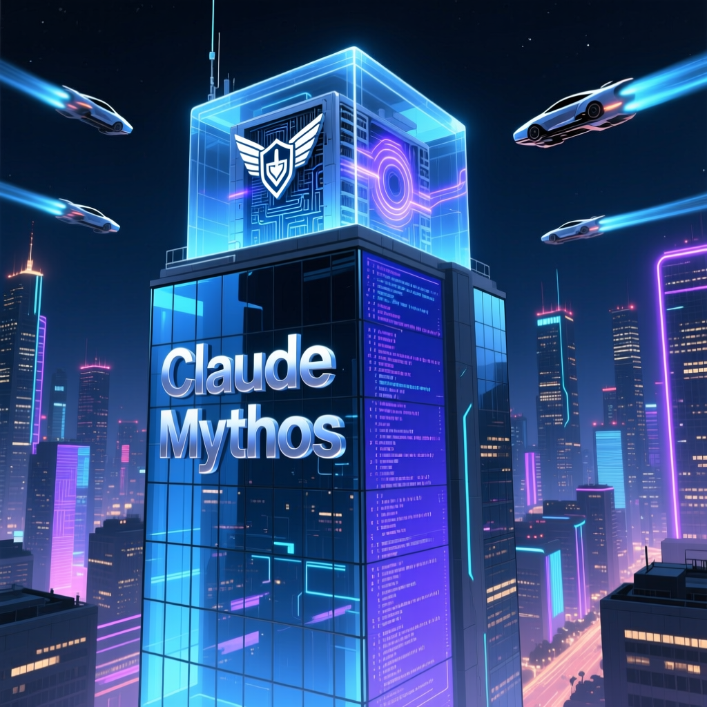

公司近日宣佈推出其最新的模型該模型在多項測評中表現卓越特別是在程式設計和漏洞挖掘方面的能力遠超現有模型然而由於其強大的漏洞挖掘與利用能力可能帶來的安全風險決定暫不對公眾開放此模型而是透過名為玻璃之翼計劃的合作專案向特定機構開放以期提升整體網路安全水平重點摘要

新聞導語 Anthropic公司近日宣佈推出其最新的AI模型Claude Mythos，該模型在多項測評中表現卓越，特別是在程式設計和漏洞挖掘方面的能力遠超現有模型。然而，由於其強大的漏洞挖掘與利用能力可能帶來的安全風險，Anthropic決定暫不對公眾開放此模型，而是透過名為“玻璃之翼計劃”的合作專案向特定機構開放，以期提升整體網路安全水平。
詳細分析 根據研究指出，Claude Mythos不僅在程式設計領域表現出色，在漏洞挖掘和利用方面也達到了前所未有的高度。資料顯示，在3.5 pro程式設計測試中，Claude Mythos的得分達到77.8%，遠超前一代旗艦模型Claude Opposer 4.6的53.4%。此外，Claude Mythos在HRE（人類最終測試）中的得分也高達56.8%，超越了配備工具的GPT-5.4 Pro。
專家分析認為，Claude Mythos之所以能在多個領域表現出如此強大的能力，主要得益於其在程式碼理解、邏輯推理及自主決策等方面的顯著提升。具體而言，Claude Mythos能夠獨立完成從漏洞發現到生成可執行攻擊程式碼的全過程，並且在真實場景下的測試中成功發現了OpenBSD系統中隱藏了27年的TCP-SAC實現缺陷，以及FreeBSD NFS服務中的遠端程式碼執行漏洞。
值得注意的是，儘管Claude Mythos在功能上取得了突破性進展，但其高昂的成本和潛在的安全風險促使Anthropic決定採取謹慎態度，僅向特定機構開放使用。據悉，“玻璃之翼計劃”已經吸引了包括雲端計算、科技巨頭及金融機構在內的多家合作伙伴加入，共同致力於提升網路安全防護水平。
業界展望 隨著AI技術日趨成熟，如何有效管理並控制其潛在風險成為擺在各國政府及企業面前的重要課題。Claude Mythos的出現無疑加速了這一議程的推進速度，未來AI安全治理體系的建設將更加迫切。同時，對於整個行業而言，這也是一個重新思考技術發展方向與社會責任之間平衡關係的良好契機。
「玻璃之翼計劃」的合作夥伴涵蓋超過 50 家科技機構，包括 Amazon Web Services（AWS）、Apple、Cisco、Google、Microsoft 等行業巨頭。Anthropic 提供超過 1 億美元的使用額度，讓合作機構使用 Claude Mythos Preview 尋找並修復其基礎系統中的漏洞。
Claude Mythos Preview 已在內部測試中發現數千個安全漏洞，涵蓋範圍包括作業系統、網路服務及雲端基礎設施等領域。這些發現涵蓋了 OpenBSD 的 TCP-SAC 實現缺陷（隱藏 27 年）及 FreeBSD NFS 服務的遠端程式碼執行漏洞等重大安全問題。
📰 更多報道